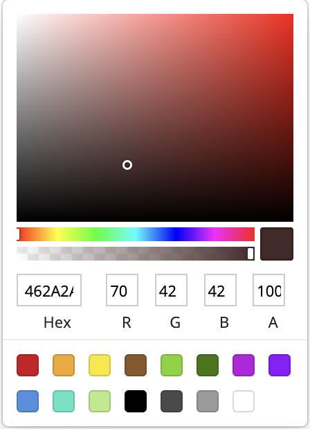
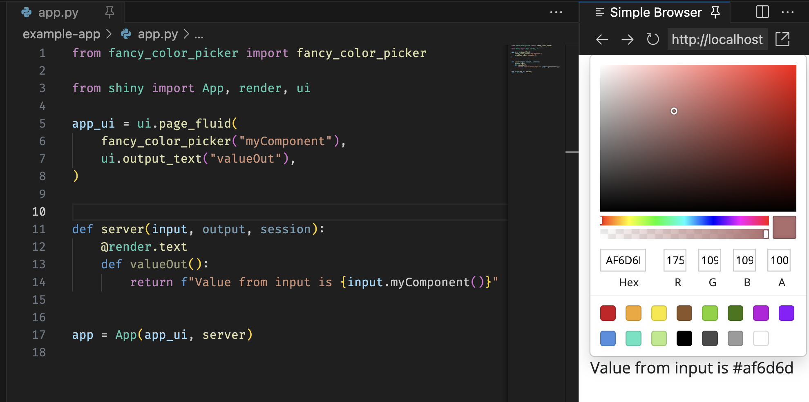

Custom components package
While there are a large number of pre-built components available for Shiny, there are times when you may want to create your own. In this article we’ll walk through the process of creating a custom input component package for Shiny. We’ll be using React and Typescript to build the component, but the process is similar for other languages and frameworks.
If you just want to build a one-off component for a single app, a full package may be overkill. See the accompanying article Custom JavaScript component for a simpler approach.
What we’ll build
The component we are going to build is a color picker that returns the hex-code of the chosen color as a string for the user to use in their app. The component will be built using React and Typescript and will be packaged as a python package that can be deployed to pypi and installed with pip so other users can easily use it in their apps.
The example here uses typescript. If you don’t want to use typescript, don’t worry! Javascript works just fine. To make this example JavaScript you can simply erase the type annotations, or run the typescript compiler on the source code to strip them out automatically.
The component itself is based on the library react-color. We’ll be using the SketchPicker component from that library to build our custom component. The full code is as follows.
srcts/index.tsx
import { SketchPicker } from "react-color";
import React from "react";
function ColorPickerReact({
initialValue,
onNewValue,
}: {
// The initial value for the color picker
initialValue: string;
// A callback that should be called whenever the color is changed
onNewValue: (x: string) => void;
}) {
const [currentColor, setCurrentColor] = React.useState(initialValue);
return (
<SketchPicker
color={currentColor}
onChange={(color) => {
setCurrentColor(color.hex);
onNewValue(color.hex);
}}
/>
);
}
ColorPickerReact componentYour component may look very different, but at the end of the day it just needs to be a self-contained react component.
This article touches on building an input component. However, it’s also possible to build output components. The process and project structure is very similar to inputs. Throughout this article look for the “What about an output binding?” tips for more information on how to build an output binding. You can generate an output template with shiny create --template js-output.
The quick version
If you just want to get up and running with the code, you can start with one of the available templates available with the shiny create --template js-react command and then run the commands provided after the template is created. You can also see the full list of JavaScript extension templates with shiny create --template js-component.
Development workflow
While there are lots of ways to develop components with live-feedback (e.g. Storybook, dev servers like vite, etc) an easy way to develop a component with our package structure is to use the example app, an editable mode pip install, and the watch mode for our build step. We can do this with the following steps:
Install the package in “editable mode” with
pip install -e .Run the bundler in watch mode with
npm run watch. This will watch thesrctsdirectory for changes and automatically rebuild the JavaScript when it detects a change.Run the example app in live-reload mode. If you’re using VScode, the Shiny extension enables this automatically when pressing the run button above the app script.
Now you can update your component JavaScript/python functions and your app will automatically reload with the changes. Happy developing!
- Once you’re happy with your component, you can deploy to PyPi. For instructions on doing this see the Python Packaging User Guide.
If you want to understand what’s going on under the hood, read on!
The component we’re creating here uses React, but there are templates for building components with plain JavaScript as well. The general concepts we talk about here apply to all of the templates so feel free to use whichever one you prefer.
Project structure
The template from above contains the color picker component above, along with all the scaffolding neccesary to build and package it as a python package.Let’s take a look at the files that are created and talk through why they are there.
my-color-picker/
├── package.json
├── package-lock.json
├── srcts
│ └── index.tsx
├── example-app
│ └── app.py
├── fancy_color_picker
│ ├── __init__.py
│ ├── distjs
│ │ └── index.js
│ └── fancy_color_picker.py
├── pyproject.toml
├── README.md
└── tsconfig.jsonpackage.json
This is the standard package.json file for a JavaScript project. It contains the dependencies and build commands for the JavaScript code. The important sections are: - A dependency on the shiny-bindings-react package. This is a JavaScript package with helpers for making it easier to create input and output bindings using React. Later we use the function makeReactInput() from this package to make Shiny aware of the component and its role as an input binding. - build command. The build command (and accompanying watch command) use esbuild to transpile the typescript to JavaScript and bundle the dependencies (like shiny-bindings-react and react itself.
The .package-lock.json file is generated by npm and contains the exact versions of the dependencies used in the project. You shouldn’t need to modify this file by hand.
srcts/index.tsx
This is where all the typescript/JavaScript code lives. We talked about the react component - ColorPickerReact - above, but it’s worth touching on the code that binds that react component with Shiny so it functions as an input:
import { SketchPicker } from "react-color";
import type { ColorResult } from "react-color";
import React from "react";
import { makeReactInput } from "@posit-dev/shiny-bindings-react";
// Generates a new input binding that renders the supplied react component
// into the root of the webcomponent.
makeReactInput({
tagName: "fancy-color-picker",
initialValue: "#fff",
renderComp: ({ initialValue, onNewValue }) => (
<ColorPickerReact
initialValue={initialValue}
onNewValue={(color) => onNewValue(color)}
/>
),
});
// Color Picker React component
function ColorPickerReact(...) { ... }In here we declare the tagName of for our component. This name is used to generate the correct markup with python later. Under the hood makeReactInput() generates a webcomponent to hold our input. A webcomponent is a custom HTML element that allows us to bind custom markup and JavaScript logic to a point in our app by simply writing the custom tag into the app’s HTML. The tagName argument provided here represents the name of that custom component we’re generating. In this case we’re registering the component as <fancy-color-picker>.
This example uses the webcomponent based interface provided by the @posit-dev/shiny-bindings-react package, but if you want lower level access you can use the built-in class-based interface. See the Shiny for R documentation for more details.
Next we provide an initialValue for the component. This is the value that will be used when the component is first rendered. In this case we’re using #fff.
Finally, we provide a renderComp function. This function is called whenever the component needs to be rendered. It is passed an object with two properties, onNewValue and initialValue. onNewValue is a callback that should be called whenever the value of the component changes. In this case we’re just passing the value of the color picker to the callback. This will send the value to Shiny and update the value of the input. initialValue is the value that should be used to initialize the component. In this case we’re just passing the value we were given to the ColorPickerReact component.
The component we’re building here is an input. However, you may be interested in building an output binding. There is a template for this but the process is not too different. Just instead of using makeReactInput() you would use makeReactOutput(). Here’s how we would do it for a simple output that displays a color:
index.tsx
// Simple react output binding that renders a div with the background color
makeReactOutput<{ value: string }>({
tagName: "fancy-color-shower",
renderComp: ({ value }) => (
<div
style={{
backgroundColor: value,
border: "1px solid black",
height: "100px",
width: "100px",
}}
/>
),
});fancy_color_picker/
distjs/*
This is where the bundled JavaScript from srcts gets placed. You shouldn’t ever need to modify anything in here by hand. It will be automatically generated when you run npm run build. It is important to note the path though, as we will need to tell Shiny where to find this JavaScript when we declare the HTMLDependency…
fancy_color_picker.py
from pathlib import PurePath
from htmltools import HTMLDependency, Tag
from shiny.module import resolve_id
# This object is used to let Shiny know where the dependencies needed to run
# our component all live. In this case, we're just using a single JavaScript
# file but we could also include CSS.
fancy_color_picker_deps = HTMLDependency(
"fancy_color_picker",
"1.0.0",
source={
"package": "fancy_color_picker",
"subdir": str(PurePath(__file__).parent / "distjs"),
},
script={"src": "index.js", "type": "module"},
)
def fancy_color_picker(id: str):
"""
A shiny input.
"""
return Tag(
# This is the name of the custom tag we created with our webcomponent
"fancy-color-picker",
fancy_color_picker_deps,
# Use resolve_id so that our component will work in a module
id=resolve_id(id),
)This is the main python script for the package. It contains the code that tells Shiny about the component and how to render it. The important parts are:
fancy_color_picker_deps
fancy_color_picker_deps = HTMLDependency(
"fancy_color_picker",
"1.0.0",
source={
"package": "fancy_color_picker",
"subdir": str(PurePath(__file__).parent / "distjs"),
},
script={"src": "index.js", "type": "module"},
)This sets up an “html-dependency” for our component. HTMLDependencies are Shiny’s way of keeping track of what resources are needed for the currently displayed elements. This html dependency is telling Shiny that whenever there is a fancy_color_picker on the page in an app, it needs to also have the bundled JavaScript at distjs/index.js as well.
Here we just declare JavaScript dependencies, but you can also include style sheets with the stylesheet argument.
fancy_color_picker
def fancy_color_picker(id: str):
"""
A shiny input.
"""
return Tag(
# This is the name of the custom tag we created with our webcomponent
"fancy-color-picker",
fancy_color_picker_deps,
# Use resolve_id so that our component will work in a module
id=resolve_id(id),
)This is the actual UI function for our component. Aka the one that gets called by the user in their app’s UI to add our component to their app.
Because makeReactInput() works by creating a webcomponent, to render our input we just need to pass the tag name we set up in the tagName argument to makeReactInput(). Next, we pass the fancy_color_picker_deps html dependency we just made and the ID of the binding and we’re good to go!
By using the resolve_id(id) function here when declaring our ID, we make sure that the component works Shiny modules where the ID of the component needs to be prefixed with the module name.
Like with the JavaScript, the process for setting up the python code for an output binding is not too different. Although there is a bit of extra work because we need to build both the ui and server components. Here’s how we would do that for the color shower output binding we defined above:
fancy_color_picker.py
from shiny.render.renderer import Renderer, Jsonifiable
class render_color(Renderer[str]):
"""
Render a color
"""
# Express mode UI
def auto_output_ui(self, id: str) -> Tag:
return output_color(self.output_id)
# Transform the app value into a JSONifiable object
async def transform(self, value: str) -> Jsonifiable:
if not isinstance(res, str):
# Throw an error if the value is not a string
raise TypeError(f"Expected a string, got {type(res)}. ")
# Send the results to the client. Make sure that this is a serializable
# object and matches what is expected in the JavaScript code.
return {"value": value}
def output_color(id: str):
"""
Show a color
"""
return Tag(
"fancy-color-shower",
fancy_color_picker_deps,
id=resolve_id(id),
)Make sure you add these to your __init__.py file so they are exposed to users of your package. Again, there is an output binding template in the shiny create menu that can get you up and running quickly.
__init__.py
from .fancy_color_picker import fancy_color_picker
__all__ = [
"fancy_color_picker",
]This is how we tell python what functions/ variables our package exposes. In this case it’s a single function, fancy_color_picker. If you were to add more components you would also need to register them here for them to be importable by users in their apps. For more information on the structure of these files see the python docs site.
pyproject.toml
This file is used to tell python/pypi about our package. It contains the name of the package, the version, and the dependencies. A deep dive into the structure of this file is outside the scope of this article, but you can find more information in the [Python Packaging Authority docs.]https://packaging.python.org/en/latest/guides/writing-pyproject-toml/)
tsconfig.json
This file is used to configure typescript, which we are using to write our component. Like the pyproject.toml file, a deep dive into the structure of this file is outside the scope of this article, but you can find more information in the typescript docs.
example-app/app.py
from fancy_color_picker import fancy_color_picker
from shiny.express import render
fancy_color_picker("myComponent")
@render.text
def valueOut():
return f"Value from input is {input.myComponent()}"from fancy_color_picker import fancy_color_picker
from shiny import App, render, ui
app_ui = ui.page_fluid(
fancy_color_picker("myComponent"),
ui.output_text("valueOut"),
)
def server(input, output, session):
@render.text
def valueOut():
return f"Value from input is {input.myComponent()}"
app = App(app_ui, server)This is a simple example app that can be used to test the component while developing. It uses the fancy_color_picker function we defined in fancy_color_picker.py to add the component to the app. It also uses the render.text decorator to render the value of the input to the page.

In our output binding example we defined an output that conveniently displays colors. If we were packaging up two components like this we could/should modify the example app to showcase both of them.
app.py
from fancy_color_picker import fancy_color_picker, render_color
import shiny.express
fancy_color_picker("myComponent")
@render_color
def myColor():
return input.myComponent()app.py
from fancy_color_picker import fancy_color_picker, output_color, render_color
from shiny import App, ui
app_ui = ui.page_fluid(
fancy_color_picker("myComponent"),
output_color("myColor"),
)
def server(input, output, session):
@render_color
def myColor():
return input.myComponent()
app = App(app_ui, server)